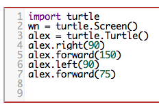
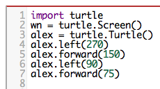
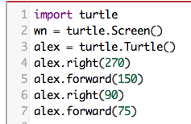
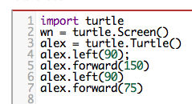
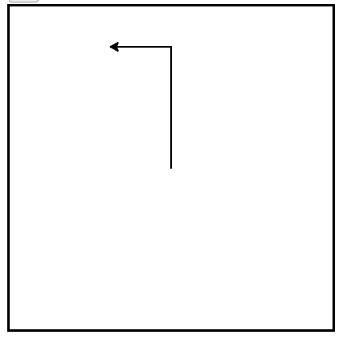

4.2. Our First Turtle Program¶
Let’s try a couple of lines of Python code to create a new turtle and start drawing a simple figure like a rectangle. We will refer to our first turtle using the variable name alex, but remember that you can choose any name you wish as long as you follow the naming rules from the previous chapter.
The program as shown will only draw the first two sides of the rectangle. After line 4 you will have a straight line going from the center of the drawing canvas towards the right. After line 6, you will have a canvas with a turtle and a half drawn rectangle. Press the run button to try it and see.
Here are a couple of things you’ll need to understand about this program.
The first line tells Python to load a module named turtle. That module
brings us two new types that we can use: the Turtle type, and the
Screen type. The dot notation turtle.Turtle means “The Turtle type
that is defined within the turtle module”. (Remember that Python is case
sensitive, so the module name, turtle, with a lowercase t, is different from the type
Turtle because of the uppercase T.)
We then create and open what the turtle module calls a screen (we would prefer to call it a window, or in the case of this web version of Python simply a canvas), which we assign to variable wn. Every window contains a canvas, which is the area inside the window on which we can draw.
In line 3 we create a turtle. The variable alex is made to refer to this
turtle. These first three lines set us up so that we are ready to do some drawing.
In lines 4-6, we instruct the object alex to move and to turn. We do this
by invoking or activating alex’s methods — these are the
instructions that all turtles know how to respond to. Here the dot indicates that
the methods invoked belong to and refer to the object alex.
Complete the rectangle …
Modify the program by adding the commands necessary to have alex complete the rectangle.
Check your understanding
- North
- Some turtle systems start with the turtle facing north, but not this one.
- South
- No, look at the first example with a turtle. Which direction does the turtle move?
- East
- Yes, the turtle starts out facing east.
- West
- No, look at the first example with a turtle. Which direction does the turtle move?
turtle-2-2: Which direction does the Turtle face when it is created?
Mixed up programs
turtle-2-3 The following program uses a turtle to draw a capital L as shown in the picture to the left of this text,
.. image:: Figures/TurtleL4.png
:width: 150
:align: left
But the lines are mixed up. The program should do all necessary set-up: import the turtle module, get the window to draw on, and create the turtle. Remember that the turtle starts off facing east when it is created. The turtle should turn to face south and draw a line that is 150 pixels long and then turn to face east and draw a line that is 75 pixels long. We have added a compass to the picture to indicate the directions north, south, west, and east.
Drag the blocks of statements from the left column to the right column and put them in the right order. Then click on *Check Me* to see if you are right. You will be told if any of the lines are in the wrong order.import turtle
window = turtle.Screen()
ella = turtle.Turtle()
---
ella.right(90)
ella.forward(150)
---
ella.left(90)
ella.forward(75)
turtle-2-4 The following program uses a turtle to draw a checkmark as shown to the left:
.. image:: Figures/TurtleCheckmark4.png
:width: 150
:align: left
But the lines are mixed up. The program should do all necessary set-up: import the turtle module, get the window to draw on, and create the turtle. The turtle should turn to face southeast, draw a line that is 75 pixels long, then turn to face northeast, and draw a line that is 150 pixels long. We have added a compass to the picture to indicate the directions north, south, west, and east. Northeast is between north and east. Southeast is between south and east.
Drag the blocks of statements from the left column to the right column and put them in the right order. Then click on *Check Me* to see if you are right. You will be told if any of the lines are in the wrong order.import turtle
---
window = turtle.Screen()
---
maria = turtle.Turtle()
---
maria.right(45)
maria.forward(75)
---
maria.left(90)
maria.forward(150)
turtle-2-5 The following program uses a turtle to draw a single line to the west as shown to the left,
.. image:: Figures/TurtleLineToWest.png
:width: 150
:align: left
But the program lines are mixed up. The program should do all necessary set-up: import the turtle module, get the window to draw on, and create the turtle. The turtle should then turn to face west and draw a line that is 75 pixels long.
Drag the blocks of statements from the left column to the right column and put them in the right order. Then click on *Check Me* to see if you are right. You will be told if any of the lines are in the wrong order.import turtle
window = turtle.Screen()
jamal = turtle.Turtle()
jamal.left(180)
jamal.forward(75)
An object can have various methods — things it can do — and it can also have attributes — (sometimes called properties). For example, each turtle has a color attribute. The method invocation alex.color(“red”) will make alex red and the line that it draws will be red too.
The color of the turtle, the width of its pen(tail), the position of the turtle within the window, which way it is facing, and so on are all part of its current state. Similarly, the window object has a background color which is part of its state.
Quite a number of attributes and methods exist that allow us to modify the turtle and window objects. In the example below, we show just show a couple and have only commented those lines that are different from the previous example. Note also that we have decided to call our turtle object tess.
The last line plays a very important role. The wn variable refers to the window shown
above. When we invoke its exitonclick method, the program pauses execution and waits for the user to click the mouse somewhere in the window.
When this click event occurs, the response is to close the turtle window and
exit (stop execution of) the Python program.
Each time we run this program, a new drawing window pops up, and will remain on the screen until we click on it.
Extend this program …
Modify this program so that before it creates the window, it prompts the user to enter the desired background color. It should store the user’s responses in a variable, and modify the color of the window according to the user’s wishes. (Hint: you can find a list of permitted color names at https://www.w3schools.com/colors/colors_names.asp. It includes some quite unusual ones, like “PeachPuff” and “HotPink”.)
Do similar changes to allow the user, at runtime, to set tess’ color.
Do the same for the width of tess’ pen. Hint: your dialog with the user will return a string, but tess’
pensizemethod expects its argument to be anint. That means you need to convert the string to an int before you pass it topensize.
Check your understanding
- It creates a new turtle object that can be used for drawing.
- The line "alex = turtle.Turtle()" is what actually creates the turtle object.
- It defines the module turtle which will allow you to create a Turtle object and draw with it.
- This line imports the module called turtle, which has all the built in functions for drawing on the screen with the Turtle object.
- It makes the turtle draw half of a rectangle on the screen.
- This functionality is performed with the lines: "alex.forward(150)", "lex.left(90)", and "alex.forward(75)"
- Nothing, it is unnecessary.
- If we leave it out, Python will give an error saying that it does not know about the name "turtle" when it reaches the line "wn = turtle.Screen()"
turtle-2-7: Consider the following code:
import turtle
wn = turtle.Screen()
alex = turtle.Turtle()
alex.forward(150)
alex.left(90)
alex.forward(75)
What does the line “import turtle” do?
- This is simply for clarity. It would also work to just type "Turtle()" instead of "turtle.Turtle()".
- We must specify the name of the module where Python can find the Turtle object.
- The period (.) is what tells Python that we want to invoke a new object.
- The period separates the module name from the object name. The parentheses at the end are what tell Python to invoke a new object.
- The first "turtle" (before the period) tells Python that we are referring to the turtle module, which is where the object "Turtle" is found.
- Yes, the Turtle type is defined in the module turtle. Remember that Python is case sensitive and Turtle is different from turtle.
turtle-2-8: Why do we type turtle.Turtle() to get a new Turtle object?
- True
- In this chapter you saw one named alex and one named tess, but any legal variable name is allowed.
- False
- A variable, including one referring to a Turtle object, can have whatever name you choose as long as it follows the naming conventions from Chapter 2.
turtle-2-9: True or False: A Turtle object can have any name that follows the naming rules from Chapter 2.
- 
- This code would turn the turtle to the south before drawing

- This code would turn the turtle to the west before drawing
- 
- This code would turn the turtle to the south before drawing
- 
- This code is almost correct, but the short end would be facing east instead of west.
- 
- Yes, the turtle starts facing east, so to turn it north you can turn left 90 or right 270 degrees.
turtle-2-10: Which of the following code would produce the following image?
Mixed up programs
turtle-2-11 The following program uses a turtle to draw a capital L in white on a blue background as shown to the left,
.. image:: Figures/BlueTurtleL.png
:width: 150
:align: left
But the lines are mixed up. The program should do all necessary set-up and create the turtle and set the pen size to 10. The turtle should then turn to face south, draw a line that is 150 pixels long, turn to face east, and draw a line that is 75 pixels long. Finally, set the window to close when the user clicks in it.
Drag the blocks of statements from the left column to the right column and put them in the right order. Then click on *Check Me* to see if you are right. You will be told if any of the lines are in the wrong order.import turtle
wn = turtle.Screen()
---
wn.bgcolor("blue")
jamal = turtle.Turtle()
---
jamal.color("white")
jamal.pensize(10)
---
jamal.right(90)
jamal.forward(150)
---
jamal.left(90)
jamal.forward(75)
wn.exitonclick()
turtle-2-12 The following program uses a turtle to draw a capital T in white on a green background as shown to the left,
.. image:: Figures/TurtleT.png
:width: 150
:align: left
But the lines are mixed up. The program should do all necessary set-up, create the turtle, and set the pen size to 10. After that the turtle should turn to face north, draw a line that is 150 pixels long, turn to face west, and draw a line that is 50 pixels long. Next, the turtle should turn 180 degrees and draw a line that is 100 pixels long. Finally, set the window to close when the user clicks in it.
Drag the blocks of statements from the left column to the right column and put them in the right order. Then click on *Check Me* to see if you are right. You will be told if any of the lines are in the wrong order.import turtle
wn = turtle.Screen()
wn.bgcolor("green")
jamal = turtle.Turtle()
jamal.color("white")
jamal.pensize(10)
---
jamal.left(90)
jamal.forward(150)
---
jamal.left(90)
jamal.forward(50)
---
jamal.right(180)
jamal.forward(100)
---
wn.exitonclick()